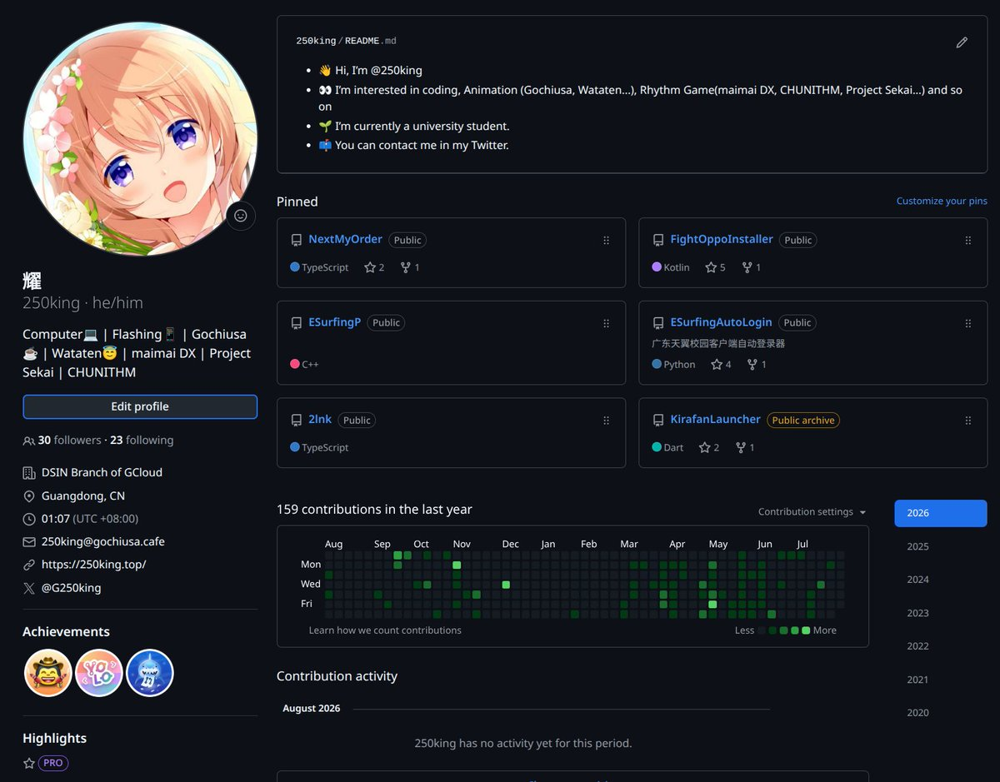

奶昔🥤
@realNyarime
@HotoCocoaOvO 点兔的头像啊

耀
@HotoCocoaOvO
近期蛮多新人，做个介绍吧
我叫耀，笔名250king，已社畜不是学生，在个不知名的小公司做全栈，不是大佬是又菜又爱玩的技术宅，专攻计科多方面
厨点兔/天使降临到，心爱是我老婆×，喜欢卡哇伊的东西❤️
现玩VRC多一点，主要玩音游，不过有时emo什么都不想玩
欢迎一起玩，也可以技术交流 https://t.co/DUuNCxwxYh